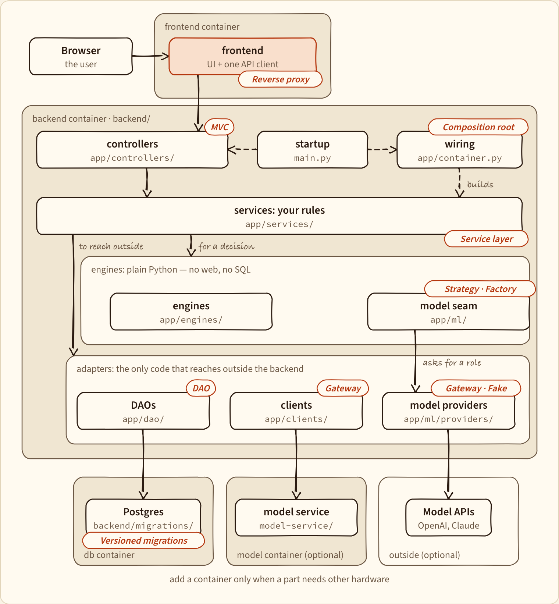
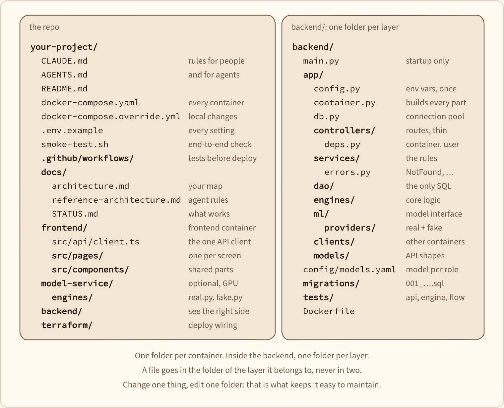
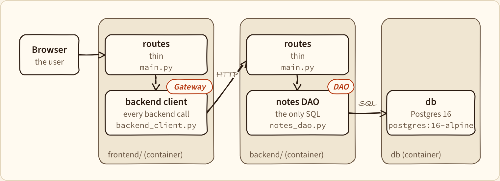
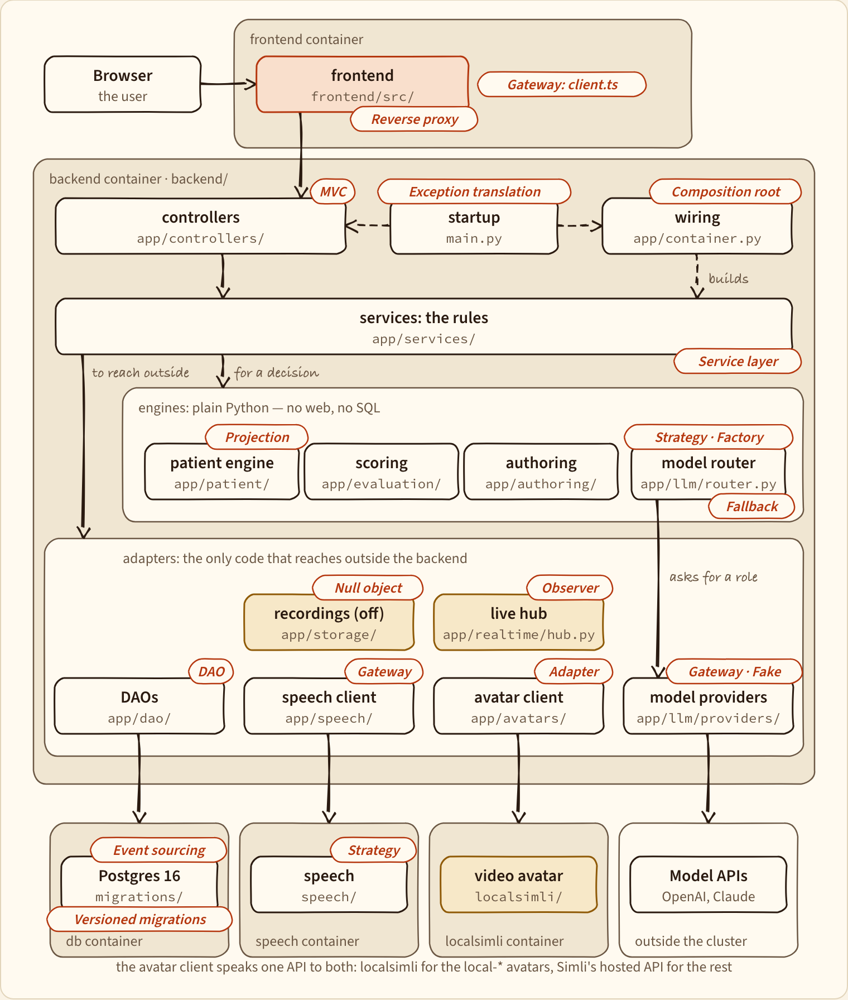

Architecture Guide
How to structure a capstone app so it stays easy to change: a reference
architecture, the folder layout that goes with it, and the design patterns
behind it, shown on a real project (Virtual Patient Clinic) that grew from
hello-world-app.
New: Questions that find bad structure — how to check code a model wrote, and how to notice when a finding is wrong. No tools.
Read the full guide: the interactive guide (about 18 minutes; light and dark mode, works on a phone) or the PDF.
Give it to your coding agent: Reference Architecture
is the same architecture written as rules for Claude Code or Codex. Copy it into
your repo as docs/reference-architecture.md and point to it from CLAUDE.md
or AGENTS.md. Its last task has the agent draw a map of your own project in
the shape below.
The reference architecture
Requests flow down, never back up. Only the frontend is public, only the
backend talks to the database, and only app/ml/ knows which model answers.
Dashed arrows run once, at startup.

Where every file goes
One folder per container; inside the backend, one folder per layer. A change touches one folder.

Where it comes from
hello-world-app already has the shape: thin routes, one file that calls the
backend, and one file that talks to the database.

Virtual Patient Clinic is the same architecture grown to five services, with every design pattern named. Amber boxes are parts the reference doesn't have.

For slides
Every drawing in the guide is in guide/diagrams/:
a PNG at 2x in the sketch look, and an SVG in the clean look.
| File | Shows |
|---|---|
reference.png | The reference architecture |
layout.png | The directory layout |
hello.png | hello-world-app with its real files |
system.png | Virtual Patient Clinic's containers |
patterns.png | Virtual Patient Clinic's code, with every pattern |
layers.png | Controller → service → DAO |
startup.png | How main.py wires the backend |
container.png | Real parts vs. mocks in tests |
router.png | The model router and its providers |
eventlog.png | The event log and what is worked out from it |
pipeline.png | Push → tests → deploy |